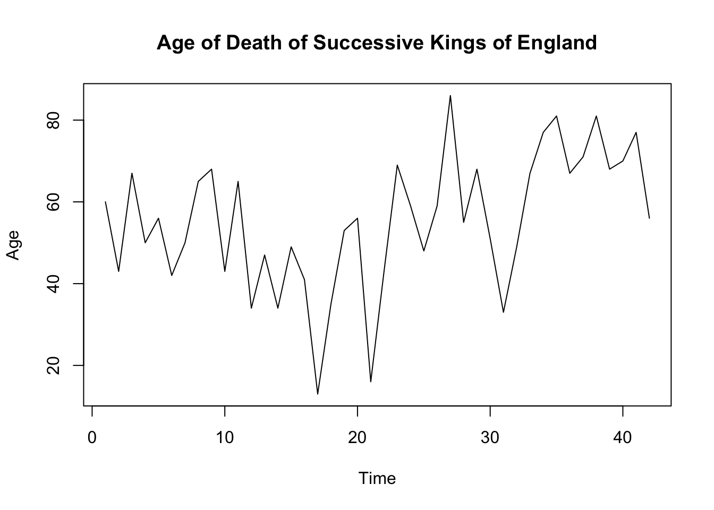

A time-series is a chronological sequence of observations on a particular variable. For example the data below is a time-series which gives the quarterly total value of time deposits held by the Baarth National Bank during 1977 and 1978.
| Quarter | Value |
|---|---|
| 1977Q1 | 35.3 |
| 1977Q2 | 37.6 |
| 1977Q3 | 38.1 |
| 1977Q4 | 39.5 |
| 1978Q1 | 37.9 |
| 1978Q2 | 39.9 |
| 1978Q3 | 40.1 |
| 1978Q4 | 41.2 |
Time-series data are often examined in hopes of discovering a historical pattern that can be exploited in the preparation of a forecast. In order to identify this pattern, it is often convenient to think of a time-series as consisting of several components:
Trend refers to the upward or downward movement that characterises a time-series over a period of time. Thus, trend reflects the long-run growth or decline in the time-series. Trend movements can represent a variety of factors, such as technological changes, changes in consumer tastes, increase in per capita income, changes in demographic, etc.
Cycle refers to recurring up and down movements around trend levels. These fluctuations can have a duration of anywhere from 2 to 10 years or even longer measured from ‘peak-to-peak’ or trough-to-trough. One of the common cyclical fluctuations found in time-series data is the “business cycle”, characterised by periods of prosperity and recession. There is no single explanation for cyclical fluctuations and they vary greatly in both length and magnitude.
Seasonal variations are periodic patterns in a time-series that complete themselves within the period of a calendar year and are then repeated on a yearly basis. Seasonal variations are usually caused by factors such as weather and customs. Think, for example, the sales of on-line shops that is normally increasing during holiday season or think the temperature which is usually high during summer months and drops during winter.
Irregular fluctuations are erratic movements in a time-series that follow no recognisable or regular pattern. Such movements represent what is “left over” in a time-series after trend, cycle and seasonal variations have been accounted for. Many irregular fluctuations in time-series are caused by “unusual” events that cannot be forecasted, such as extreme weather events, wars, strikes, etc. Irregular fluctuations can be also caused by errors on the part of the time-series analyst when, for example, entering data.
Components discussed above do not always occur alone; they can occur in any combination or can occur all together. That means there is no single best forecasting technique that fits all data. For example, a forecasting technique that is appropriate for a time-series characterised by trend alone may not be appropriate in forecasting time-series characterised by a combination of trend and seasonal variations. Once an appropriate technique has been selected, the methodology usually involves analysing the time-series data in such a way that the different components that are present can be estimated. The different estimates obtained are then combined in order to produce a forecast.
The graphs are examples of time-series with (a) trend, (b) seasonality, and (c) cycle.

The presence of the irregular component, which represents unexplained or unpredictable fluctuations in the data, means that some error in forecasting must be expected. If the effect of the irregular component is substantial, our ability to forecast accurately will be limited. If, however, the effect of the irregular component is small, determination of the appropriate trend, seasonal, or cyclical patterns should allow us to forecast with more accuracy. The irregular component is not the only source of errors in forecasting. The accuracy with which we can predict each of the other components of a time-series also influences the magnitude of error in our forecasts. Since these components cannot be perfectly predicted in a practical situation, the errors in forecasting represent the combined effects of irregular component and the accuracy with which the forecasting technique can predict trend, seasonal or cyclical patterns.
In time-series context there are two types of forecasting performed: (a) point forecast and (b) confidence interval forecast. A point forecast is a number that represents our best prediction of the value of the variable of interest at a given point in time. It is essentially our “best guess” for the future value of the variable being forecast. Point forecast are often in error and as a result a point forecast alone is often not adequate. On the other hand, a confidence interval forecast provides an estimate of how wrong a point forecast might be. A confidence interval is an interval or a range of values that is calculated so that we are “quite sure”, that the actual value of the variable being forecast will be contained in that interval. If the interval is constructed so that we are 95% sure that the actual value will be in the interval, we call this interva, a “95% confidence interval” and say that the level of confidence is 95%.